Japonska
Mesec za dušo
3. november – 2. december 2026 · Tokio → Osaka
Potovalni vodnik za Magdo in prijateljice — vaš žepni spremljevalec: za vsako postajo znamenitosti z zemljevidi, preverjene restavracije, osebne rubrike, nasveti in videi.
📸 Naše fotografije👋 Dobrodošle
Pred vami je mesec, kakršnega si privoščimo enkrat v življenju — cel november na Japonskem, v času, ko se javorji obarvajo v najlepše rdeče in zlato. Ta vodnik ni seznam, ki bi ga bilo treba prehiteti; je vaš tihi spremljevalec.
Potujte počasi. Ena znamenitost dopoldne, ena popoldne, vmes skodelica čaja. Ustavite se, kjer je lepo, in tam ostanite dlje, kot se zdi potrebno. Japonska najlepše nagradi tiste, ki se ji ne mudi.
Na vsaki postaji boste našle znamenitosti z zemljevidi, kje in kaj jesti, kdaj je kraj najlepši, kje si vzeti uro zase — in prostor za svoje zapiske. Lepo pot, drage naše. 🍁
- 🗼 Tokio
- 🌳 Chichibu
- 🗻 Fuji
- 🏯 Minobu
- 🌊 Izu
- ⛩️ Kumano
- 🏔️ Koya-san
- 🏞️ Iya
- 🎣 Ine
- 🦌 Nara
- 🍁 Kyoto
- 🏙️ Osaka
- 🕊️ Hiroshima
Naše postaje
-
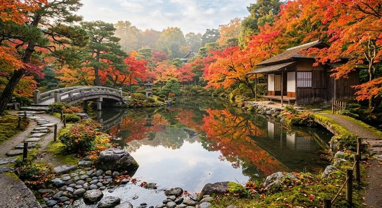
Postaja 1 · 4 noči 🗼 Tokio Odpri vodnik → -
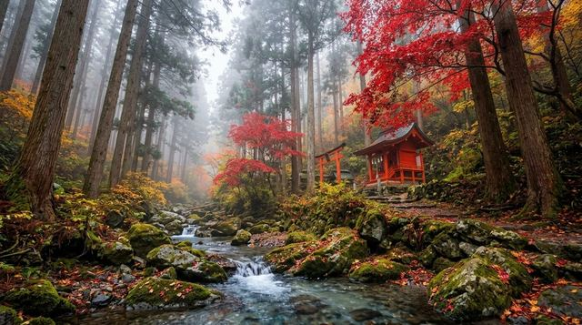
Postaja 2 · Enodnevni izlet iz Tokia 🌳 Chichibu Odpri vodnik → -
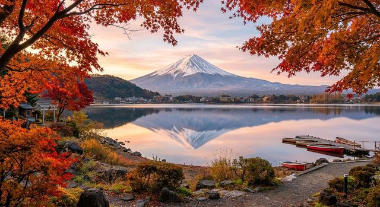
Postaja 3 · 1 noč 🗻 Kawaguchiko & gora Fuji Odpri vodnik → -
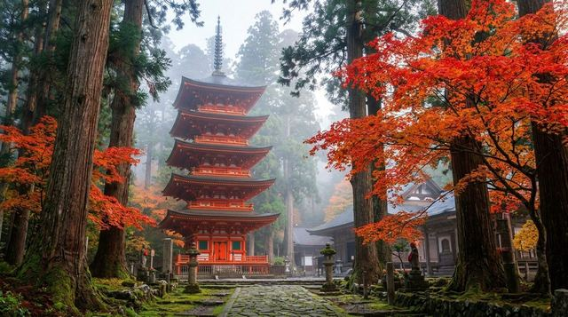
Postaja 4 · 1 noč pri menihih 🏯 Minobusan Odpri vodnik → -
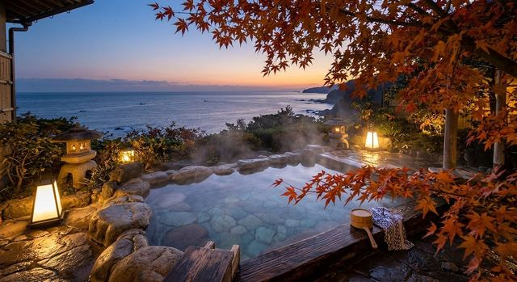
Postaja 5 · 3 noči 🌊 Izu polotok Odpri vodnik → -
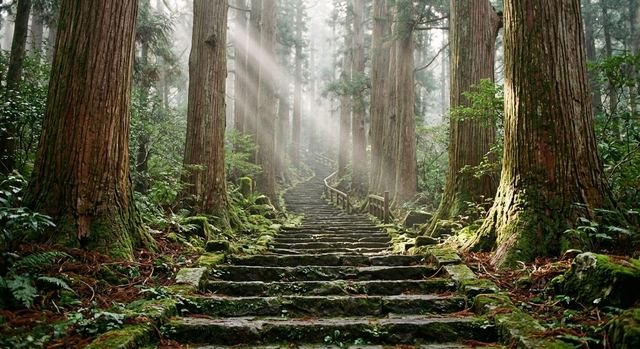
Postaja 6 · 3 noči ⛩️ Kumano Kodo Odpri vodnik → -
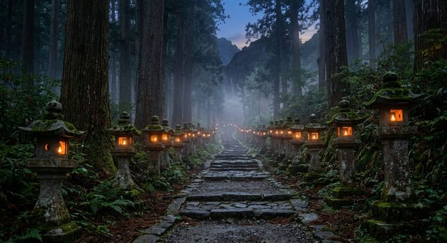
Postaja 7 · 1–2 noči 🏔️ Koya-san Odpri vodnik → -
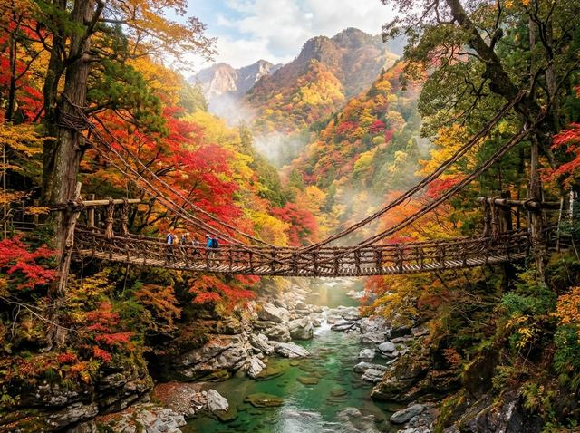
Postaja 8 · 3 noči 🏞️ Shikoku — dolina Iya Odpri vodnik → -
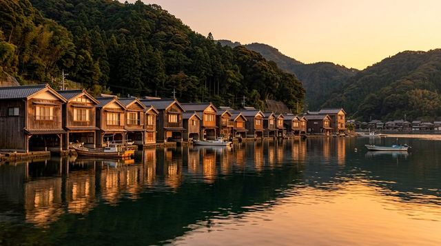
Postaja 9 · 2 noči 🎣 Ine Odpri vodnik → -
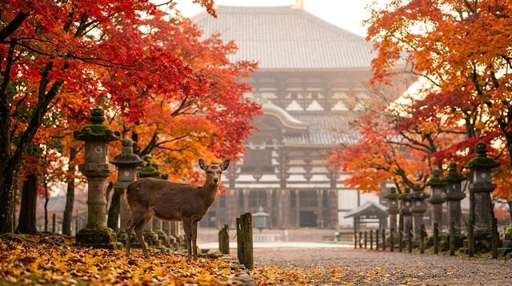
Postaja 10 · Enodnevni izlet iz Kjota ali Osake 🦌 Nara Odpri vodnik → -
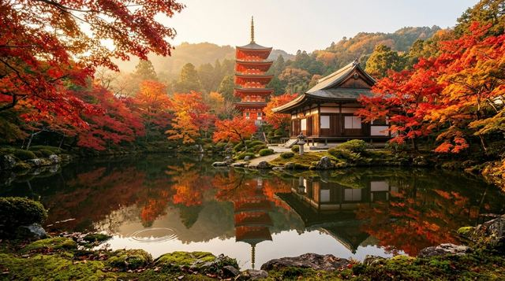
Postaja 11 · 5 noči 🍁 Kyoto Odpri vodnik → -
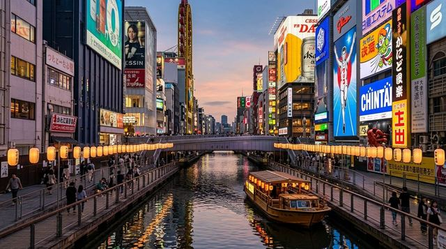
Postaja 12 · 5 noči 🏙️ Osaka Odpri vodnik → -
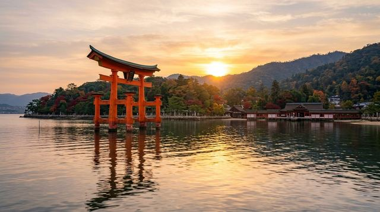
Postaja 13 · Enodnevni izlet iz Osake 🕊️ Hiroshima Odpri vodnik →